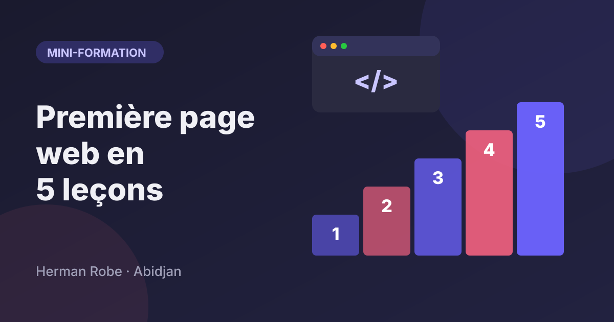
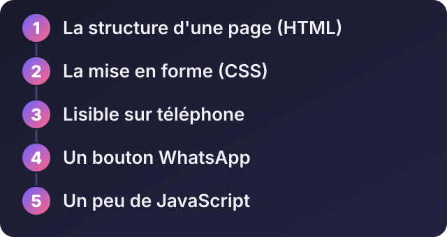
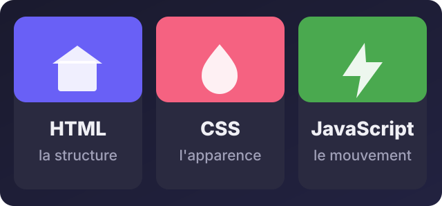

Accueil / Blog / Mini-formations
Mini-formationsMini-formation : créer sa première page web en 5 leçons

Écouter cet article · environ 5 min
Cette mini-formation s'adresse à quelqu'un qui n'a jamais écrit une page web. Elle reprend les bases que j'enseignais en tant que formateur (HTML, CSS, JavaScript). Il vous faut un ordinateur, un éditeur de texte (le Bloc-notes suffit, Visual Studio Code est mieux) et un navigateur. Comptez environ deux heures, avec les exercices. À la fin, vous aurez une page personnelle prête à être mise en ligne.

Une page web repose sur trois couches qui travaillent ensemble : la structure, l'apparence et le mouvement.

Leçon 1 : la structure d'une page (HTML)
Une page web est un fichier texte avec des balises. Créez un dossier ma-page et, dedans, un fichier index.html :
<!DOCTYPE html>
<html lang="fr">
<head>
<meta charset="UTF-8">
<title>Awa Koné, couturière à Cocody</title>
</head>
<body>
<h1>Awa Koné</h1>
<p>Couturière à Cocody. Robes sur mesure et retouches.</p>
<h2>Mes services</h2>
<ul>
<li>Robes sur mesure</li>
<li>Retouches</li>
</ul>
<a href="mailto:exemple@mail.com">M'écrire</a>
</body>
</html>Double-cliquez sur le fichier : il s'ouvre dans le navigateur. h1 est le titre principal, h2 un sous-titre, p un paragraphe, ul et li une liste, a un lien.
Leçon 2 : la mise en forme (CSS)
Le HTML dit ce que contient la page, le CSS dit comment elle s'affiche. Créez un fichier style.css dans le même dossier et reliez-le dans le <head> du HTML :
<link rel="stylesheet" href="style.css">body {
font-family: Arial, sans-serif;
max-width: 40rem;
margin: 0 auto;
padding: 1rem;
line-height: 1.6;
color: #222;
}
h1 { color: #6c3fb5; }
a {
color: #6c3fb5;
font-weight: bold;
}Enregistrez, rechargez la page (touche F5) : les couleurs et les marges changent. Une règle CSS se lit toujours ainsi : ce-qu'on-cible { propriété: valeur; }.
Leçon 3 : une page lisible sur téléphone
Vos visiteurs sont presque tous sur téléphone. Deux choses à faire. D'abord, cette ligne dans le <head> du HTML :
<meta name="viewport" content="width=device-width, initial-scale=1">Sans elle, le téléphone affiche la page en « petit » comme un ordinateur. Ensuite, dans le CSS, disposez des cartes qui s'empilent sur téléphone et se mettent côte à côte sur grand écran :
.services {
display: grid;
gap: 1rem;
}
.carte {
background: white;
padding: 1rem;
border-radius: 8px;
}
@media (min-width: 40rem) {
.services { grid-template-columns: 1fr 1fr; }
}Dans le HTML, mettez vos services dans <div class="services"> contenant des <div class="carte">. Pour tester : ouvrez la page, faites un clic droit puis « Inspecter », et cliquez sur l'icône de téléphone pour simuler un écran mobile.
Leçon 4 : un bouton WhatsApp
Pour la plupart de vos clients, WhatsApp est le moyen de contact le plus simple. Un lien suffit, avec votre numéro au format international (225 puis les 10 chiffres) et un message déjà écrit :
<a class="bouton"
href="https://wa.me/2250172527765?text=Bonjour%2C%20je%20voudrais%20un%20devis"
target="_blank" rel="noopener">
Écrire sur WhatsApp
</a>Pour en faire un vrai bouton, ajoutez dans le CSS :
.bouton {
display: inline-block;
padding: 0.9rem 1.4rem;
background: #25d366;
color: #fff;
border-radius: 999px;
text-decoration: none;
font-weight: bold;
}Leçon 5 : un peu de JavaScript
Le JavaScript donne de la vie à la page. Un petit exemple utile : afficher « Bonjour » ou « Bonsoir » selon l'heure. Dans le HTML, ajoutez un emplacement :
<p id="salutation"></p>Puis, juste avant la balise fermante </body> :
<script>
const heure = new Date().getHours();
const mot = heure < 18 ? 'Bonjour' : 'Bonsoir';
document.getElementById('salutation').textContent = mot + ' et bienvenue !';
</script>Le script lit l'heure de l'appareil, choisit le mot, et l'écrit dans le paragraphe. C'est le principe de toute page interactive : lire quelque chose, décider, modifier la page.
Mettre la page en ligne
Votre page est prête. Pour la publier, plusieurs services proposent un hébergement gratuit pour un site simple, comme GitHub Pages, Netlify ou Vercel. Vous y envoyez votre dossier et vous obtenez une adresse. Pour avoir votre propre adresse (monentreprise.com), il faudra ensuite acheter un nom de domaine.
Avant de partager votre page
- Le titre de la page (
<title>) dit-il ce que vous faites et où ? - Les images ont-elles un texte alternatif (
alt) ? - La page est-elle lisible sur téléphone ?
- Le bouton WhatsApp fonctionne-t-il avec votre numéro ?
Vous avez fini ? Envoyez-moi votre page, je vous donne un avis franc, et si vous voulez aller plus loin (plusieurs pages, formulaire, boutique), on en parle.